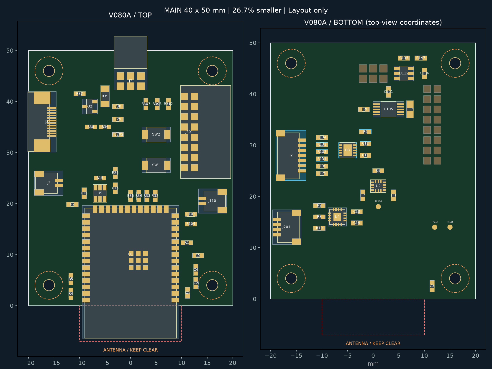
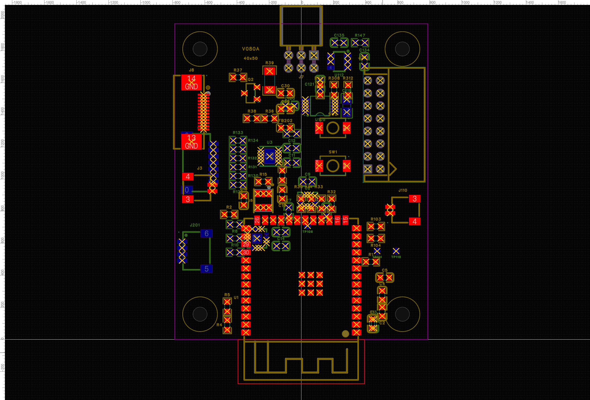

器灵 · V0.8.0A · 2026.10.27 · 布局稿
触摸整组移到背面，主控缩为 40 × 50 mm
在现有三板新工程中完成调整。电源板、剑身板和原理图保持，三块板仍未布线。
40 × 50 mm
原主控 44 × 62 mm
−26.7%
板面积减少 728 mm²
11 个器件
触摸接口、芯片与配套阻容全部在背面
主控布局前后对照

左图正面，右图背面。背面图按正面同一坐标显示，便于对照；蓝色外框是触摸整组，橙色虚线是螺丝占位和天线避让。图片按各自尺寸显示，并非同比例叠图。
本轮改动
| 项目 |
已完成 |
| 触摸整组 |
J2、U3、C11/C12、R6、R129–R134 全部在背面；J2朝板外接线。 |
| 主控布局 |
集中麦克风、按键和上方外设区域；背面重新组织触摸、IMU、音频与马达电路。 |
| 安装孔 |
四个 Ø2.2 mm 孔，孔距 32 × 42 mm；按 Ø5.5 mm 螺丝占位检查。 |
| 连接关系 |
69 个主控器件保留；三板 147 器件引脚网络与 21 页原理图保持，H1针序不变。 |
| 其他两板 |
电源 38 × 48 mm、剑身 20 × 32 mm，布局保持。 |
| 检查 |
未发现元件、穿孔和螺丝占位冲突；最小同面包络间距约 0.331 mm。原生PCB检查只有未布线提示。 |
40 × 50 mm 是板框尺寸，不含板外天线、J7插头和线束。新孔位需要同步外壳；当前仍是未布线布局，后续需验证走线、装配、射频、触摸噪声和声学。
当前嘉立创工程
Spirit_V080_Three_Board_Layout_20261026
主控PCB：V080A_Main_Compact_40x50
电源PCB和剑身PCB沿用原名称。原P3C已布线工程与旧交付作为历史保留。
查看嘉立创原生画面
此图同时显示两面，因此投影叠在一起；正反面分开看请用上方布局图。黄色叉号为未布线提示。

完整原理图在原生工程内。已保留调整前完整备份；本轮没有生成制造文件。